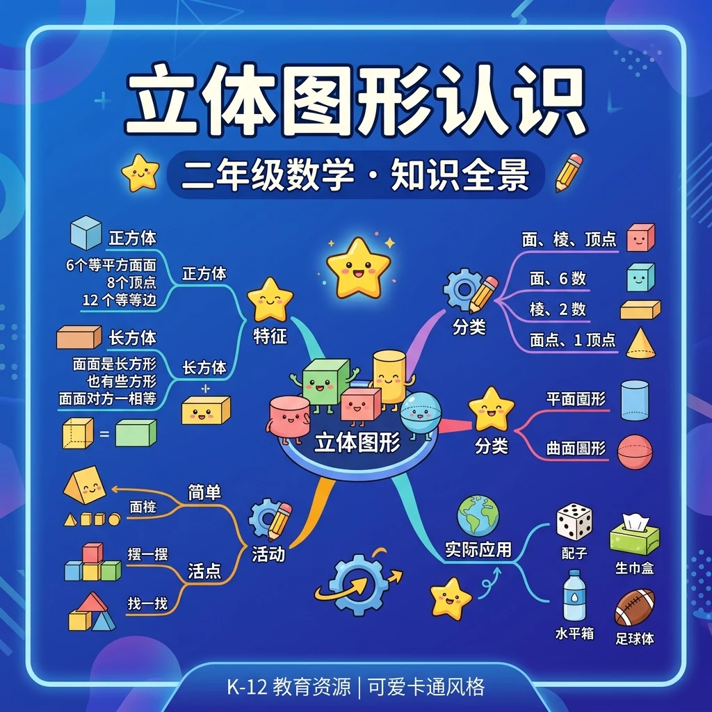
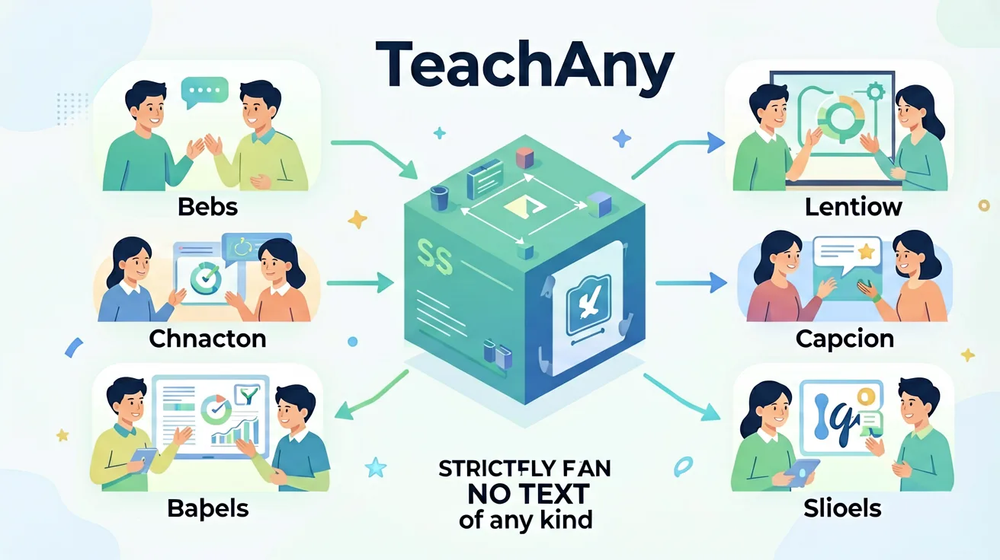

❓ 为什么篮球不是圆柱体？
❓ 魔方和足球的边有什么不同？
❓ 水杯的侧面展开是什么形状？
学完这一课，这些问题你都能自信地回答。
🎯 能说出常见立体图形的名称和特征
🎯 能判断立体图形的展开图对应关系
🎯 能分析立体图形在生活中的应用场景
🌍 And（已知）：你已经掌握了一些基础知识
⚡ But（问题）：遇到更复杂的情况还不够用
💡 Therefore（新知）：学习今天的内容，让能力更完整、更系统
在学习新内容之前，先测测你的基础知识！
Q1：下面哪个是立体图形？
Q2：乒乓球是哪种立体图形？
6个正方形的面，12条边，8个顶点
6个长方形的面（含正方体），12条边，8个顶点
2个圆形底面，1个曲面，无顶点
1个圆形底面，1个曲面，1个顶点
| 图形 | 面 | 顶点 | 棱（边） | 特征 |
|---|---|---|---|---|
| 🎲 正方体 | 6个正方形 | 8个 | 12条 | 各边等长 |
| 📦 长方体 | 6个长方形 | 8个 | 12条 | 对面相同 |
| 🥤 圆柱 | 2个圆+1曲面 | 0个 | 0条（2个圆弧） | 两底面平行等圆 |
| 🍦 圆锥 | 1个圆+1曲面 | 1个（顶） | 0条（1个圆弧） | 只有一个底面 |
三维世界已掌握！
完成学习后，用这两道题检验你的掌握程度！
Q1：长方体有几个面、几条棱、几个顶点？
Q2：圆柱有几个底面？底面是什么形状？
记忆口诀：长方体六面体，12棱8顶点；正方体特殊长方体，六面全相等；圆柱两圆一侧面，圆锥一圆一侧尖；球体到处都一样，没有棱也没有角。助记：联系生活——鞋盒=长方体，骰子=正方体，罐头=圆柱，冰淇淋=圆锥，地球=球体。
⚠️ 如果你做错了，看看错在哪里：
如果你认为圆柱只有2个面（上下底），你忽略了侧面。圆柱展开后：2个圆形底面+1个长方形侧面（展开后是长方形）=3个面。
💡 自查方法：把答案代回原题验证，如果算出矛盾就说明中间有错误！
💡 背后的原理
🔍 本质：立体图形是"三维"的，有长、宽、高。展开图连接了"3D立体"和"2D平面"。长方体展开图有11种不同形状，但面积（表面积）相同。
回忆：今天学了哪些关键词和规则？试着说出来。
用自己的话解释今天学的核心概念，不看书能说清楚吗？
用今天的知识解决一个实际问题，或写一个新例子。
把今天的知识与已有知识联系起来：有什么共同点？有什么区别？能不能自己创造一道新题？
先独立作答，再点选项查看对错与错因。
哪种积木最适合做城堡的底座？
哪个图形无论怎么放都会滚动？
圆柱和圆锥的共同点是？
长方体有____个长方形的面
答案：6
长方体有6个面都是长方形
能滚动的立体图形有球体和____
答案：圆柱
圆柱侧面是曲面会滚动
哪个图形与其他三个不同类？
测试不同立体图形在斜面上的表现
✅ 圆柱侧面展开是长方形，但弯曲时是曲面
💡 空间想象能力不足
✅ 所有长方体都有12条棱
💡 未建立系统的几何概念
And：学生已认识平面图形
But：但不知道立体图形与平面的区别
Therefore：通过触摸实物建立立体感
立体图形是‘有厚度’的图形，不像纸片只能看正面。比如这个粉笔盒（展示实物），从上面看是长方形，侧面看可能变成细长条——因为它有高度！数一数：它有6个长方形的面，12条直直的边，还有8个尖尖的角。
🌍 找找教室里的立体图形：课本是长方体，篮球是球体，粉笔接近圆柱体。下次吃冰淇淋时，注意蛋筒是圆锥哦！
下面哪个是立体图形？
And：知道立体图形有棱角
But：但分不清棱和角的数量关系
Therefore：用牙签和橡皮泥动手验证
棱是两个面相遇的边（用牙签演示），角是三条棱相交的点（橡皮泥小球）。做个实验：用8块橡皮泥当角，12根牙签当棱，就能拼出长方体框架。注意！正方体也有12条棱，但每条棱长度都一样哦。
🌍 观察快递纸箱：撕开胶带时沿着棱撕最整齐，打包时要保护角的部位——因为它们最容易被撞瘪！
正方体有几条棱？
And：见过不同立体图形
But：不明白为什么柱子多是圆柱
Therefore：通过承重实验理解结构特点
圆柱的曲面让它受力均匀（放课本测试：圆柱纸筒比三棱柱承重多3本）。而金字塔最稳是因为重量都压向底面（演示：轻推三棱锥和正方体模型，前者不易倒）。记住：底面越大、重心越低越稳定！
🌍 为什么饮料罐不做成方柱？因为圆柱没有棱角，运输时不容易磕碰变形，还能节省包装材料呢！
工地脚手架用钢管而不用方柱，主要因为圆柱：

